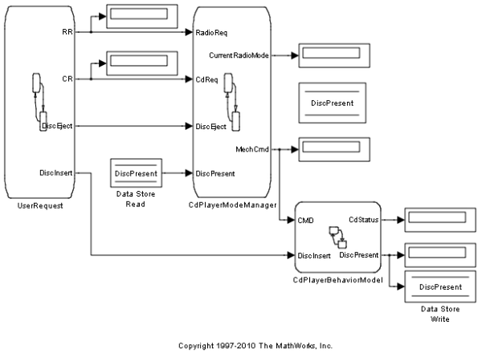
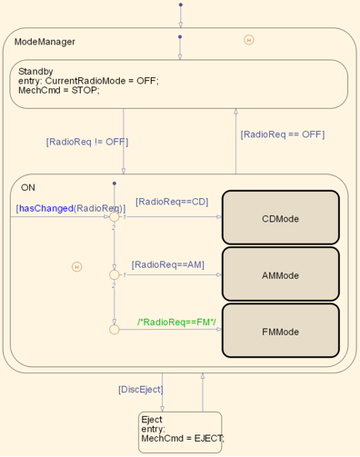
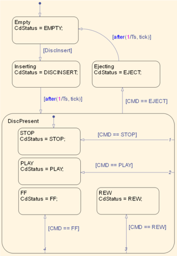
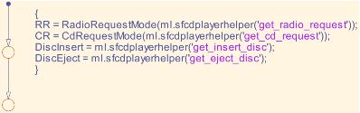
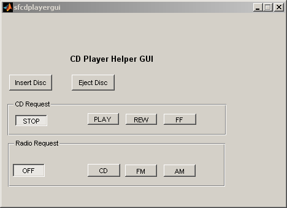

列挙型のデータ型を使った CD プレーヤー/ラジオのモデル化
この例は、Simulink® および Stateflow® (R2008b 新機能) で列挙型データを使用する CD プレーヤー/ラジオ ロジックの簡単なモデルです。
 CD プレーヤー/ラジオを制御するロジックの中核は、CdPlayerModeManager チャートにあります。このチャートは、ディスクが挿入されたかどうか、ラジオのモード (FM、AM、または CD) の選択など、ユーザーによる入力を受け取ります。次に、チャートは出力するメカニカル コマンドを決定します。たとえば、このチャートは、プレーヤーにディスクが挿入されていない状況では Rewind コマンドが発行されないことを表しています。入力データ "RadioReqMode" と "CdReqMode" のデータ型は、出力データ "CurrentRadioMode" と "MechCmd" と同様に列挙型のデータ型として定義されることに注意してください。これらの型は、M ファイル CdRequestMode.m や RadioRequestMode.m で定義されます。"CD"、"FM" などの列挙文字列は、比較や割り当てのためにチャートに直接アクセスされます。
"CdPlayerModeManager" からの出力コマンドは、CD プレーヤーのメカニズムの動作をモデル化するチャート "CdPlayerBehaviorModel" によって処理されます。
"CdPlayerModeManager" への入力は、Simulink による特定周期の割合で起動され、sfcdplayerhelper.m という外部 M ファイルを呼び出すチャート "UserRequestChart" によって提供されます。この M ファイルは、Handle Graphics® パネルと Simulink 間の媒介として動作します。
 